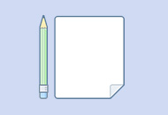

使用问卷收集数据的基本流程是：创建问卷、编辑问卷、设置问卷、预览问卷、回收问卷、数据分析等几个步骤。问卷提供三种创建问卷方式，创建空白问卷、选择问卷模板、文本编辑器。可以灵活设置问卷的显示、回收条件，在线实时统计回收结果，并可以导出Excel和SPSS数据。详细操作指引请参照帮助中心”操作指引“部分。

问卷，共有三种创建问卷的方式让您来选择使用：创建空白问卷、选择问卷模板、文本编辑器，可根据自身的使用习惯，选择最合适的方式来快速创建一份问卷。

问卷编辑、预览完成后，一份在线问卷即完成，此时可以通过对问卷的复制、编辑、删除、发布、统计、导出、分享等功能，实现对问卷的全面管理